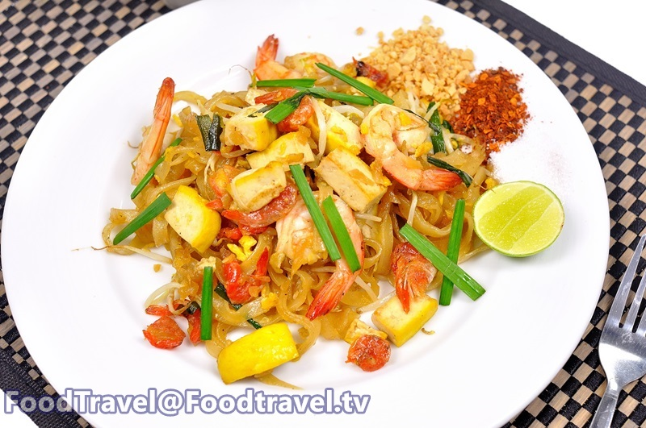
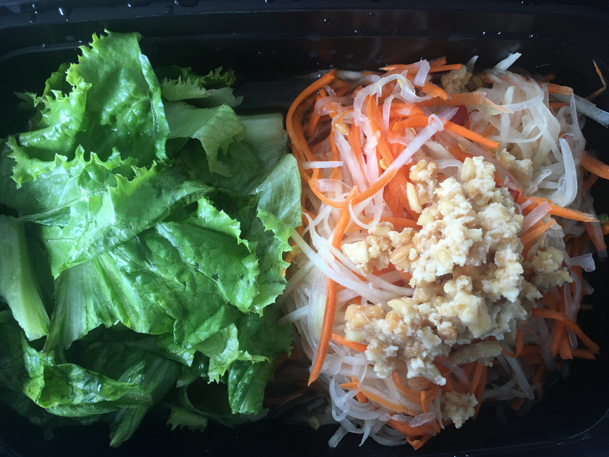

Photo by Omni Deli under Chitralada Technology Institute

Photo by Omni Deli under Chitralada Technology Institute
Hello everyone ! My name is Sirikalaya Siripattarakul or you can call me JJ. I’m from Thailand. This is my first web page that I will show you about my hobby. I have many hobby in Thailand but when I move to study at USA. I don’t have hobby in here but now I have my hobby when Covid-19 happen. You know what is my hobby? My hobby is cooking. I never think I can cook. Usually I cook like normal fried rice and Thai omelette that is. But now I cook many thing that I want to eat. I enjoy to cook Thai food because I can learn many thing for cooking , I can adapt food when I can’t find ingredient in the USA. And save money(This is an important to me now)
|
|

|
Photo by Omni Deli under Chitralada Technology Institute
Photo by Omni Deli under Chitralada Technology Institute
Before I can cook a little and now I can cook more food and I can adapt it. If you think you want to make another food. You can search on Google , and watch on Youtube. For me usually I use my language for searching and you can use your language for searching.
* You can use google translate to english *
|
FriedRice with grill duck |

Spaghetti Veggi |

Papaya Salad |